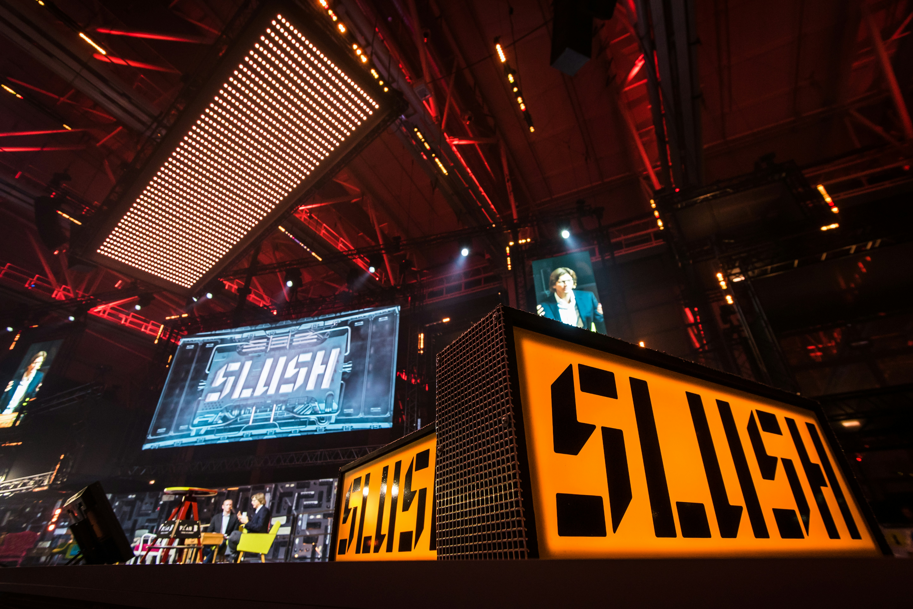
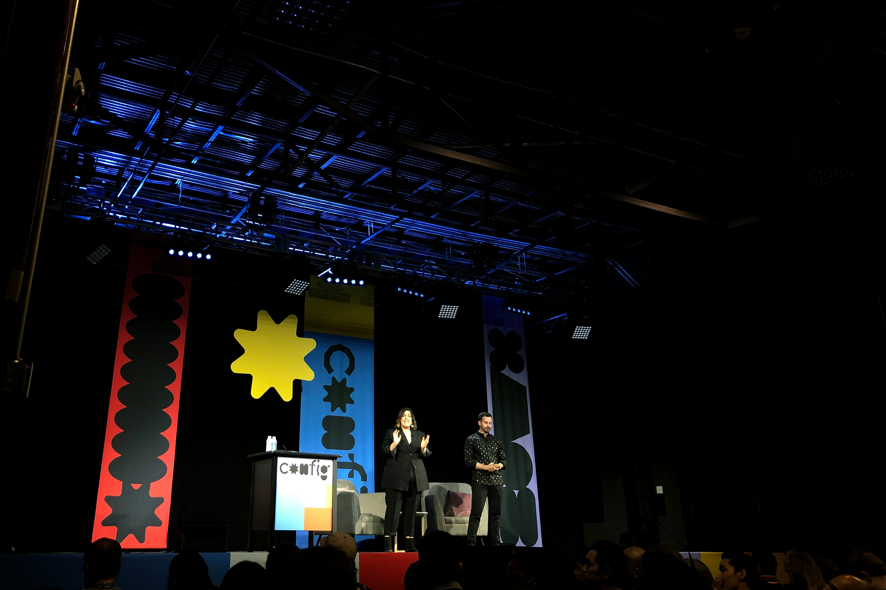
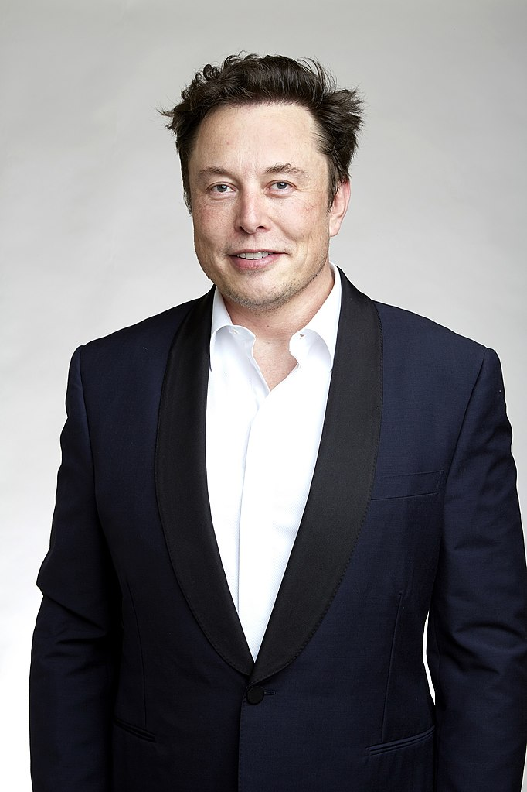

TechCon was founded in Dublin in 2009 by Paddy Cosgrave. It started as a 150-person tech conference in October 2009. Since 2009, It has gathered together over a million business people from around the world.
Its flagship event is TechCon in Lisbon, which takes place every November. During the year, TechCon now hosts events around the world, including TechCon Rio in South America, TechCon Qatar in the Middle East, Collision and TechCon Vancouver in North America, and TechCon Nairobi in Africa.
TechCon Lisbon 2023

TechCon Qatar 2020TechCon Vancouver 2016

TechCon Rio 2010
Mission
Our mission has been to create software that enables meaningful connections between the CEOs, founders, investors, media, politicians and cultural figureheads who are reshaping the world.
Spotlight on Innovation: With thousands of startups and established companies showcasing their latest technologies, TechCon is a hub for discovering cutting-edge innovations. Whether you’re interested in AI, fintech, or creative design, there’s something here to inspire every attendee.
Networking Opportunities: The event’s networking sessions are designed to help you connect with like-minded professionals, potential partners, and industry leaders. Whether through formal meetups or spontaneous conversations, you’ll have countless opportunities to expand your network.
Diverse Perspectives: With speakers from a wide array of industries, TechCon offers a unique chance to gain insights from experts across the tech spectrum. Whether you’re looking for big-picture trends or practical advice, the diverse range of sessions ensures there’s something for everyone.
Past Speakers
Elon Reeve Musk FRS (born June 28, 1971) is a businessman and investor known for his key roles in the space company SpaceX and the automotive company Tesla, Inc. Other involvements include ownership of X Corp., the company that operates the social media platform X (formerly known as Twitter), and his role in the founding of The Boring Company, xAI, Neuralink, and OpenAI. He is one of the wealthiest individuals in the world; as of August 2024 Forbes estimates his net worth to be US$247 billion.

Elon Musk at TechCon Vancouver 2023
William Henry Gates III (born October 28, 1955) is an American business magnate best known for co-founding the software company Microsoft with his childhood friend Paul Allen. During his career at Microsoft, Gates held the positions of chairman, chief executive officer (CEO), president, and chief software architect, while also being its largest individual shareholder until May 2014.He was a pioneer of the microcomputer revolution of the 1970s and 1980s.
Bill Gates at TechCon Lisbon 2020
Mark Elliot Zuckerberg (born May 14, 1984) is an American businessman. He co-founded the social media service Facebook and its parent company Meta Platforms (formerly Facebook, Inc.), of which he is chairman, chief executive officer and controlling shareholder. Zuckerberg has been the subject of multiple lawsuits regarding the creation and ownership of the website as well as issues of user privacy.
Mark Zuckerberg at TechCon Rio 2021
Jack Ma Yun (born 10 September 1964) is a Chinese business magnate, investor and philanthropist. He is the co-founder of Alibaba Group, a multinational technology conglomerate. In addition, Ma is also the co-founder of Yunfeng Capital, a Chinese private equity firm. As of February 2024, with a net worth of $30.1 billion, Ma is the sixth-wealthiest person in China, as well as the 50th wealthiest person in the world, ranked by the Bloomberg Billionaires Index.